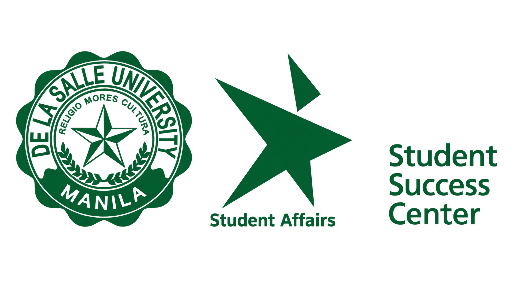

Peer tutorial matching
A student is matched with a qualified PAL for explanations, guided practice, and study strategies focused on an identified course need.
Request → SSC matching → Tutorial & feedback

Lasallian Peer Academic Leaders
Lasallian PALs is a peer academic support initiative of the Student Success Center (SSC). Qualified students help fellow Lasallians understand course content, develop effective study habits, and become confident, independent learners.
Support is offered through individualized peer tutorials and guided study groups, coordinated by SSC and informed by academic unit needs.
Complementing faculty instruction. PALs guide learning and practice. Faculty retain responsibility for teaching, assessment, and official course requirements.
Voluntary, course-specific support. Matching and sessions depend on qualified PALs, schedules, demand, and program capacity.
A student is matched with a qualified PAL for explanations, guided practice, and study strategies focused on an identified course need.
PALs facilitate structured discussion and active practice for high-demand or challenging courses identified with academic units.
Earlier help-seeking · Clearer understanding · Greater confidence · Stronger study habits · Peer leadership
PALs are qualified student peer leaders selected and prepared by SSC for specific courses.
A course grade of 3.0 may be considered for hard-to-fill courses through joint SSC and academic unit review. Faculty recommendations are optional.
Review eligibility, course suitability, availability, and commitment.
Cover facilitation, academic integrity, confidentiality, referrals, and documentation.
Match the qualified pool to approved demand and available capacity.
Selection does not guarantee assignments or a minimum number of service hours.
Owns the program and coordinates recruitment, screening, orientation, matching, records, referrals, quality review, and service support processing.
Identify priority courses, recommend candidates, support course-specific review, clarify permitted materials, and advise on faculty referrals.
Prepare and facilitate sessions, uphold boundaries, protect student information, document service, and raise concerns with SSC.
SSC-approved sessions require verified attendance and session records. Records should capture the date, duration, general topics, and necessary referrals.
A (food) allowance is provided per SSC-approved session delivered, subject to verified attendance and complete session records. SSC confirms the applicable amount per session and processing requirements before service.
The draft guidelines propose a focused pilot before wider expansion, subject to leadership approval and coordination with participating academic units.
Confirm priority courses, recruit and orient PALs, prepare forms, and establish service-hour and fund controls.
Indicative: 4–6 weeksOpen requests, deliver tutorials and groups, verify records, and respond to service concerns and unmet demand.
Indicative: one academic termReview participation, feedback, capacity, and costs to recommend continuation, adjustment, or expansion.
Indicative: 2–3 weeksConfirm approving officers, pilot scope, fund source, service-hour limits, (food) allowance amount per session and release timetable, data access permissions, referral contacts, and the escalation process.
Prepare the application or nomination form, tutorial request form, matching tracker, session and attendance log, feedback form, service documentation, and certificate template.
Students served, completed matches and groups, verified hours, attendance, student feedback, perceived learning gains, referrals, unmet course demand, PAL retention, and fund use.
Use findings to improve access and service quality. The program’s monitoring is not a substitute for course grading or faculty evaluation.
Planning basis: SSC peer academic support draft guidelines, July 2026, and the Lasallian PALs recruitment website. Pilot timings are indicative; administrative arrangements remain subject to confirmation.